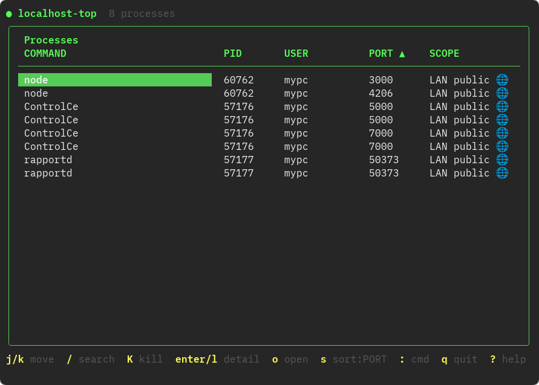
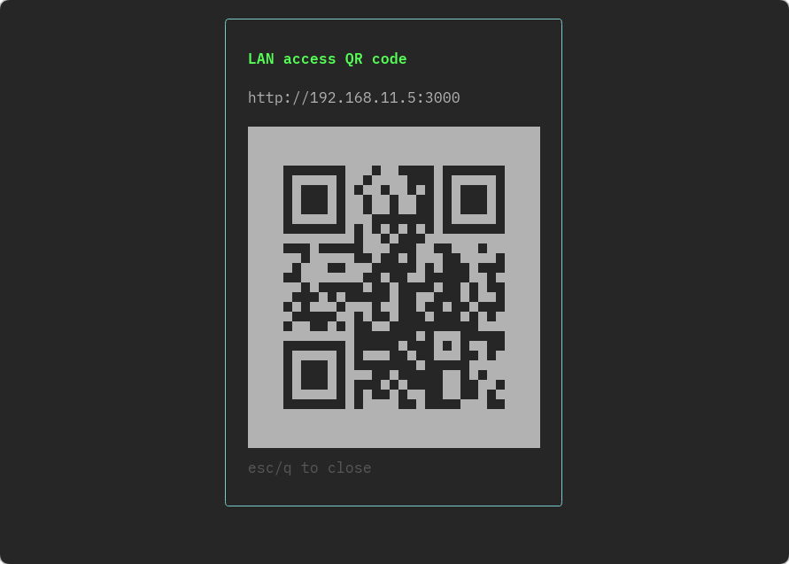

Port management

See every process LISTENing on localhost in a live-updating list, auto-reloaded every 2 seconds, with a confirmation prompt before you kill anything.
brew tap Hol1kgmg/localhost-top
brew install --cask localhost-top

See every process LISTENing on localhost in a live-updating list, auto-reloaded every 2 seconds, with a confirmation prompt before you kill anything.

For processes bound to 0.0.0.0, get a QR code and shareable link so anyone on the same LAN can open it instantly.